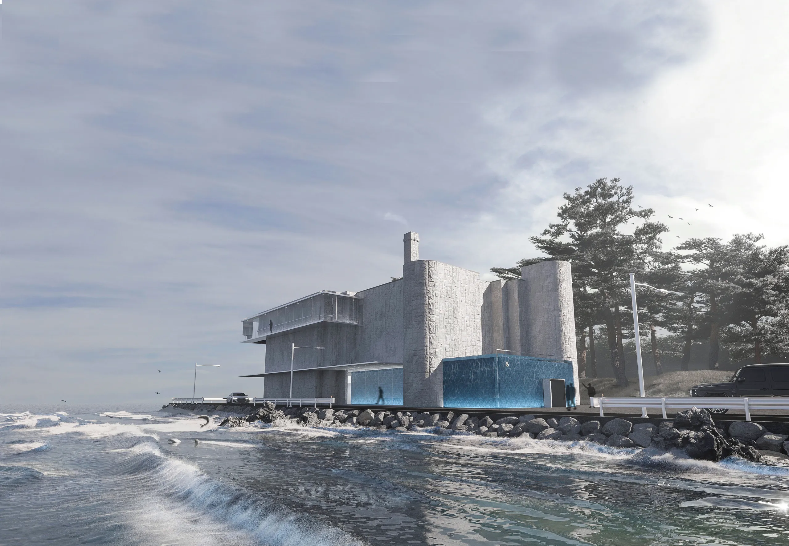
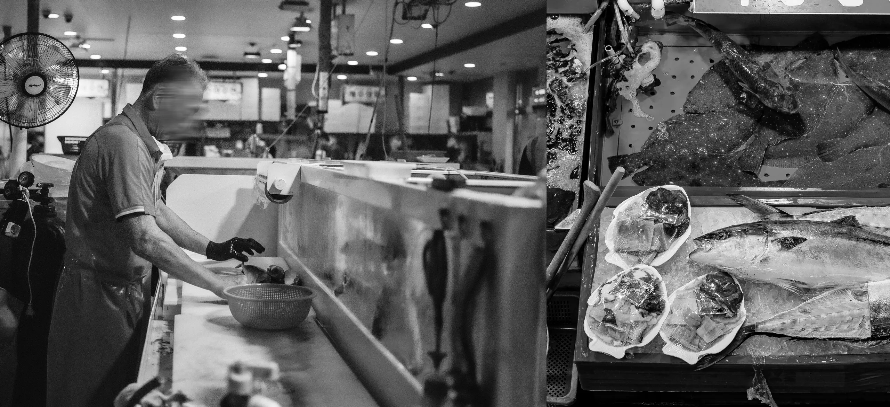
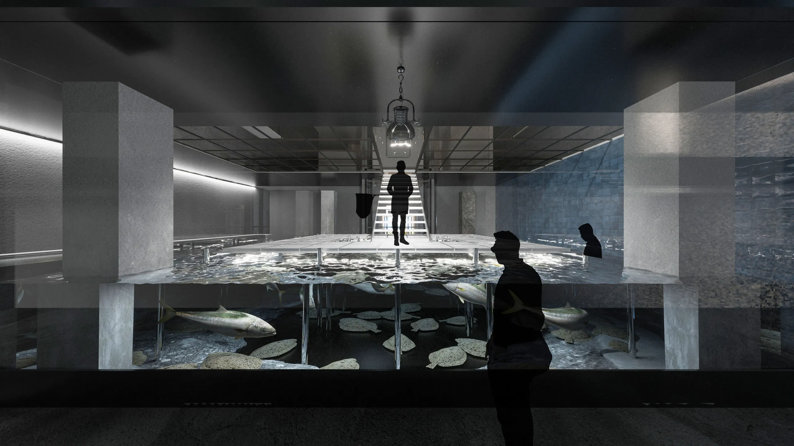
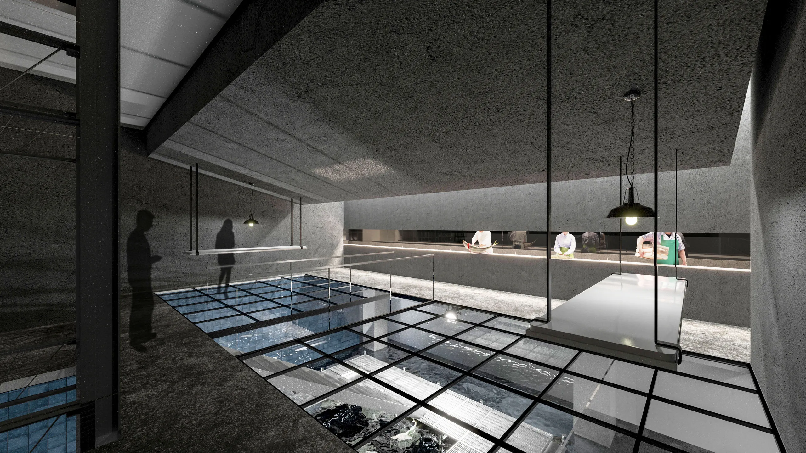
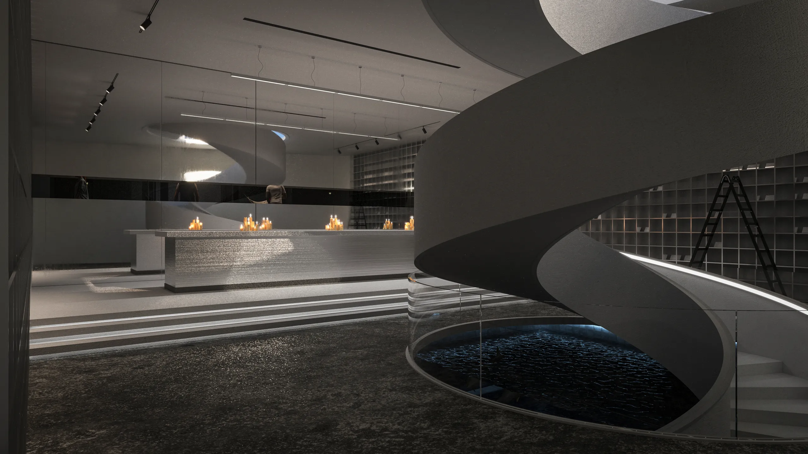
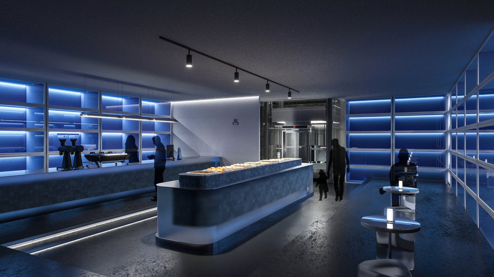
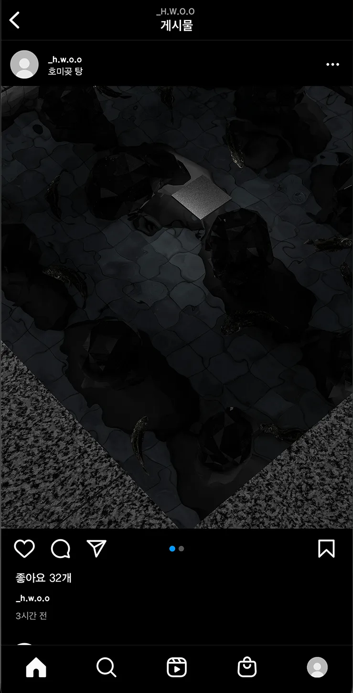
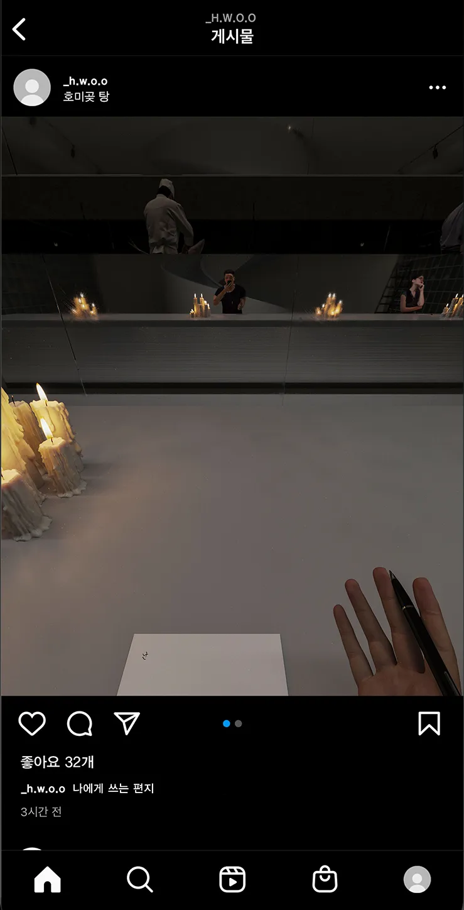
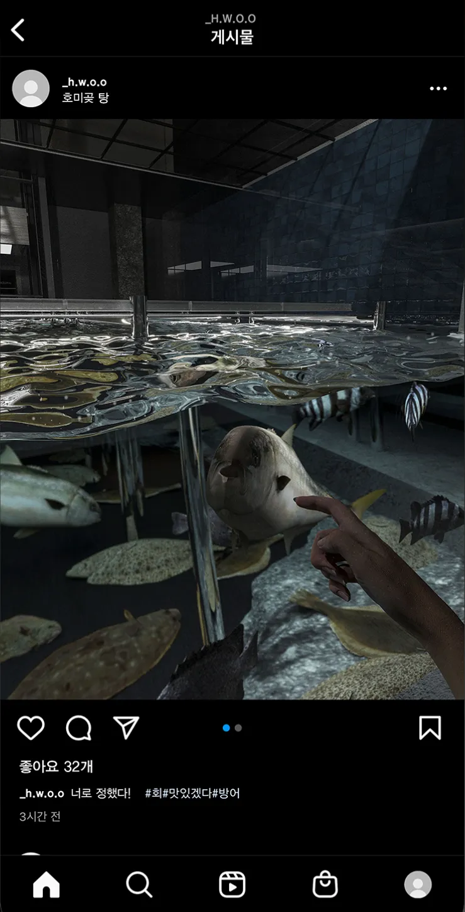

('21)A Raw Fish Restaurant
as an Experiential Space on Mortality
After the sudden passing of my grandmother, with whom I shared a deep bond, I realized the necessity of preparing for the concept of death.
In Korea, a dish called Hoe, freshly caught live fish eaten raw that is distinct from sushi, is highly popular. At traditional raw fish restaurants, known as Hoe-jip, it is customary for customers to select their live fish directly from an aquarium before it is prepared. I saw a reflection of our own unpredictable human fate in the arbitrary death of the fish chosen during this routine process.
Driven by this realization, I designed a space that operates as a functional raw fish restaurant, but also serves as an experiential exhibition for willing participants. The exhibition allows visitors to retrace the steps of consuming the fish, but from the perspective of the fish itself, prompting a profound reflection on our own mortality.
For the site, I repurposed an abandoned Haesutang, a traditional Korean public bathhouse that uses seawater. By utilizing a space where humans themselves were once submerged in seawater, I aimed to evoke a direct, visceral empathy with the fish in the tank.







